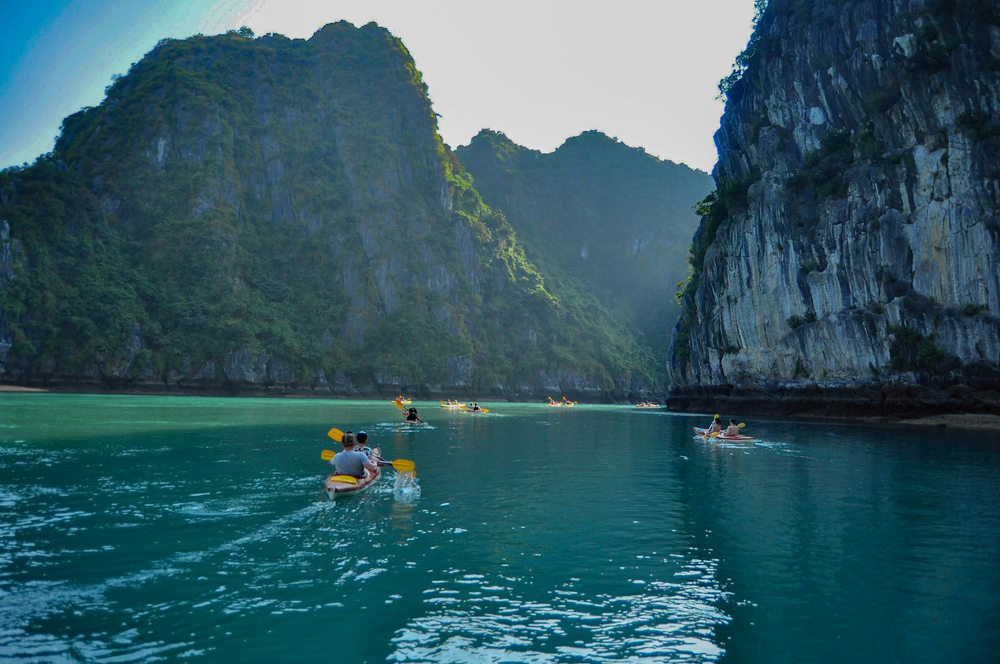
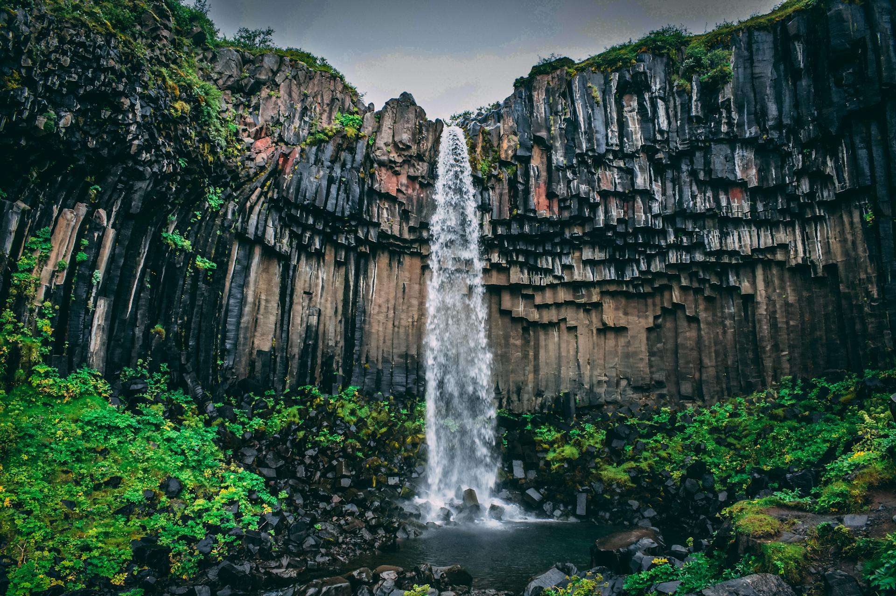
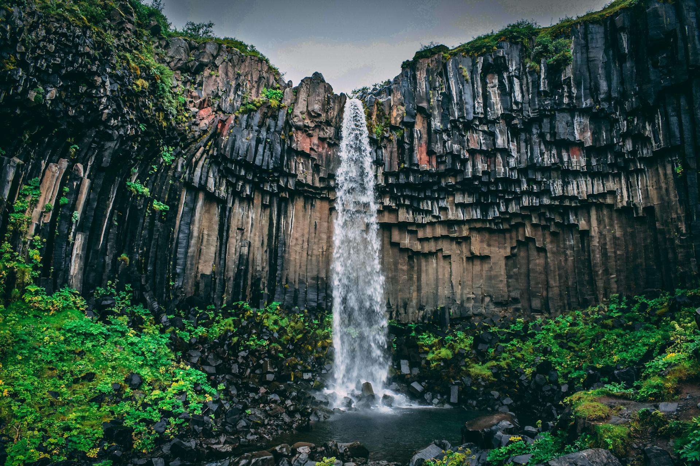
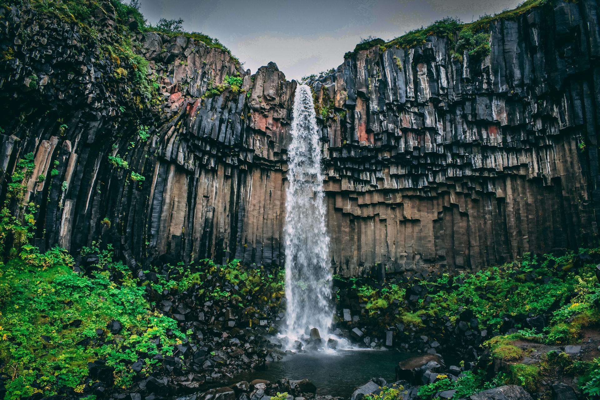
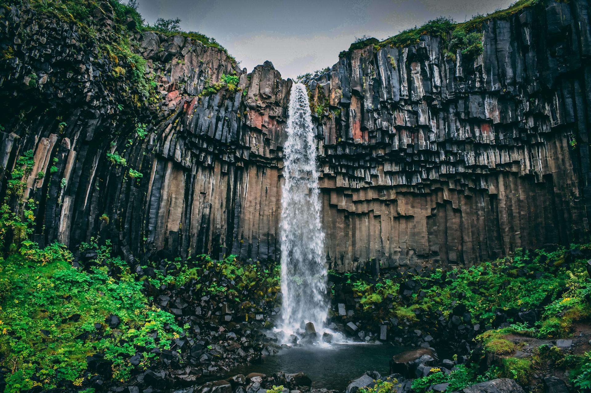

 




I’m your guide, here to help you discover the beauty, culture, and hidden gems of the Volta Region. Whether you’re seeking adventure, relaxation, or unforgettable moments, I’ll walk with you through every step of your journey. Let’s explore together.


Make your journey to the Volta Region smooth and unforgettable. Here’s everything you need to know before you go.
Travel easily by road from Accra, Tema, Ho, and Aflao. Major transport services include VIP, STC, and local trotro routes.
From lakefront lodges to eco-friendly guesthouses, the region offers comfortable stays for all budgets.
The dry season (Nov–Apr) is ideal for outdoor activities. Festival months offer vibrant cultural experiences.
Carry light wear, stay hydrated, respect local customs, and support community-led tourism.
Discover the breathtaking beauty and cultural richness of Ghana’s Volta Region through this interactive map.
Explore waterfalls, mountains, and historic sites that define the region’s natural charm and deep heritage.
Tap The Red Marker
The Volta Region is rich with vibrant traditions, colorful festivals, and deep cultural heritage. Here are some of the most celebrated festivals you can experience throughout the year.
The famous Anlo festival celebrating the migration story of the Ewe people, filled with dancing, drumming, and royal ceremonies.

This is the major yam festival for the Asogli State (Ho and its environs). It is a harvest festival that gives thanks for a successful harvest.

Celebrated by the people of Aflao, this festival marks their exodus from Northern Togo with grand processions, war dances, and songs.
This festival is celebrated by the Agotime Kpetoe people and honors their tradition of Kente weaving.
“Visiting the Volta Region was the best decision I made in Ghana. The landscapes were stunning and the people were incredibly welcoming. I felt at home the entire trip.”
“The hiking trails, waterfalls, and calm villages were beyond beautiful. Wli Falls and Mount Afadja gave me memories I’ll never forget. I’m definitely coming back.”
“The cultural experience was extraordinary. Watching the Kente weaving and joining the local festivals opened my eyes to the beauty of Ewe tradition.”

“I loved every moment of my visit. The food, the music, the scenery — everything felt peaceful and refreshing. The Volta Region is Ghana’s hidden treasure.”

“As a nature lover, the Volta Region is paradise. The greenery, the wildlife, and the quiet environment make it the perfect escape from the city.”

“Our family trip to the Volta Region was unforgettable. The children enjoyed the waterfalls and boat rides, while we enjoyed the calm atmosphere and friendly people.”
You can travel by bus, minibus (“trotro”), or private car. Major departure points include Tudu, Madina, Accra Mall VIP Station, and Ho Station. The trip takes 3–4 hours depending on traffic.
No. The Volta Region is open to all travelers and requires no special permits.
The best months are November to March for cool weather and April to August for powerful waterfalls.
Yes. It’s peaceful and friendly. Just follow standard travel safety practices.
Popular attractions include Wli Waterfall, Mount Afadjato, Amedzofe, Tafi Atome Monkey Sanctuary, Fort Prinzenstein, Kalakpa Reserve, Keta Lagoon, and Volta Lake.
Yes. Most attractions charge small fees to support community development. Rates vary for locals, students, and foreigners.
Some attractions require guides for safety, including Wli Waterfalls and Afadjato. Even where optional, guides enhance the experience. But during our trips our personal guides will be used.
The region has hotels, lodges, and guesthouses in Ho, Hohoe, Keta, Kpando, Afadjato South, and Amedzofe.
Yes! Festivals like Hogbetsotso and Asogli Yam Festival welcome tourists and offer dance, drumming, and cultural displays.